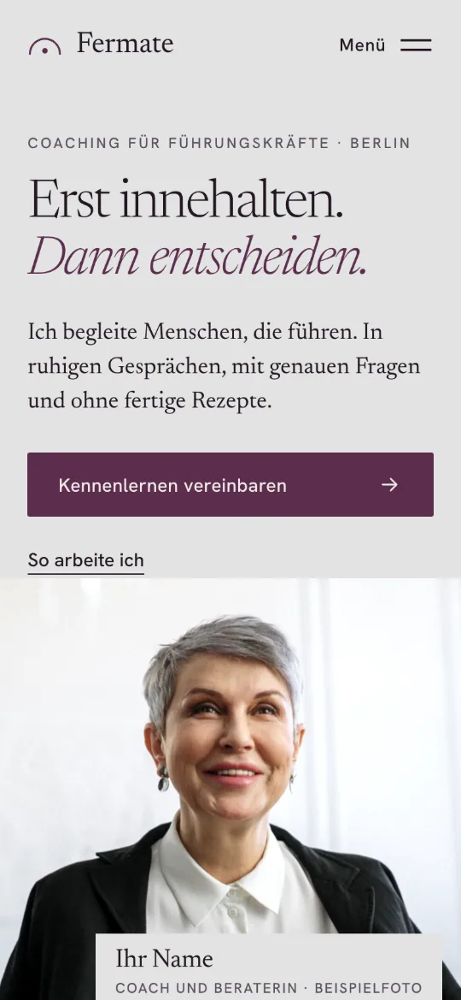

Beispiel · erfundener Betrieb
Website für Coaches erstellen lassen: die Beispielseite Fermate
Wer ein Coaching sucht, wählt zuerst die Person. Wenn Sie als Coach oder Beraterin eine Website erstellen lassen möchten, zeigt diese Beispielseite für einen erfundenen Coaching-Betrieb, wie Gesicht, Haltung und Themen zu einer Anfrage für das Kennenlernen führen.
Coaching für Führungskräfte auf einer ruhigen Seite mit großer Schrift. Aus vielen schwebenden Gedanken wird eine einzige Frage. Danach lässt sich ein Kennenlernen anfragen.

Welche Aufgabe löst die Seite?
Wer ein Coaching sucht, wählt zuerst die Person. Die Seite zeigt deshalb Gesicht, Haltung und Themen, sagt, was man erwarten darf und was nicht, und führt zu einem Kennenlernen.
Was enthält die Seite?
- Person im Mittelpunkt
- Szene Die Pause
- Kennenlernen
Im Einstieg steht ein Porträt. Es folgen eine angeheftete Szene, in der aus vielen schwebenden Gedanken die Frage „Was ist jetzt wirklich wichtig?“ wird, fünf Themen zum Aufklappen, ein Film, der beim Scrollen wächst, der Ablauf in vier Schritten, drei Formate der Zusammenarbeit, der Abschnitt „Was Sie erwarten dürfen. Und was nicht.“ und ein Formular für das Kennenlernen.
Wie jede unserer Seiten ist sie zuerst für das Handy gestaltet und lädt schnell.
Für wen passt so eine Seite?
Für Coaches, Beraterinnen und Berater sowie Trainer, die mit ihrer Person arbeiten und Anfragen für ein erstes Gespräch bekommen wollen.
Häufige Fragen zur Website für Coaches
Wie bekommt eine Coaching-Website Persönlichkeit, ohne nach Stockfoto auszusehen?
Mit Ihrem Gesicht und Ihren Worten. Die Beispielseite Fermate beginnt mit einem Porträt. Für Ihre Seite planen wir einen Termin für Fotos, auf Wunsch auch für ein kurzes Video, und schreiben die Texte gern aus dem Gespräch.
Wie erklärt man Coaching, das man nicht sehen kann?
Mit einer Szene statt einer Behauptung. Auf der Beispielseite werden aus vielen schwebenden Gedanken die Frage „Was ist jetzt wirklich wichtig?“, danach folgen fünf Themen zum Aufklappen und der Ablauf in vier Schritten.
Wie grenzt die Seite Coaching von Therapie ab?
Ein eigener Abschnitt sagt offen, was Besucher erwarten dürfen und was nicht. Die Beispielseite hat ihn unter „Was Sie erwarten dürfen. Und was nicht.“ Die genauen Formulierungen stimmen wir mit Ihnen ab. Rechtliche Fragen zu Ihren Aussagen klären Sie bitte mit einer Fachperson.
Wie läuft der Weg zum Erstgespräch auf der Seite?
Über drei Formate der Zusammenarbeit und ein Formular für das Kennenlernen. Es fragt nur das Nötigste ab. In der Beispielseite sendet es nichts.
Wie gehen Sie mit Stimmen von Klientinnen und Klienten um?
Wir setzen Stimmen nur ein, wenn sie echt sind und die Personen zugestimmt haben. Erfundene Zitate bauen wir nicht.
Wie entsteht Ihre eigene Seite?
In sechs Schritten: Briefing, Design, Feedback, Umsetzung, Abnahme, Live. Sie sehen den Entwurf, bevor wir bauen, und online geht die Seite erst mit Ihrem Okay. Zum Ablauf
Websites gibt es ab 2.990 € netto, einmalig. Alle Preise finden Sie bei MAKE Innovation: Alle Preise. Mehr zu Video und Reels und zu Social Media steht auf der Startseite.
Stand: November 2026